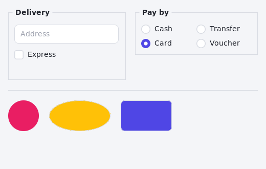
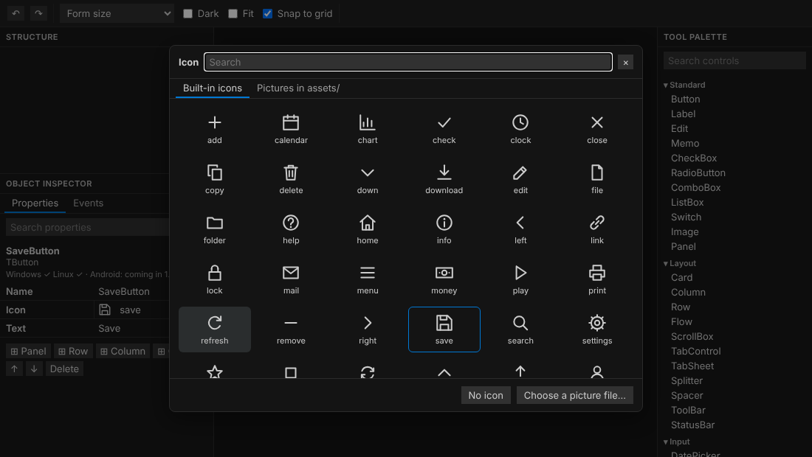
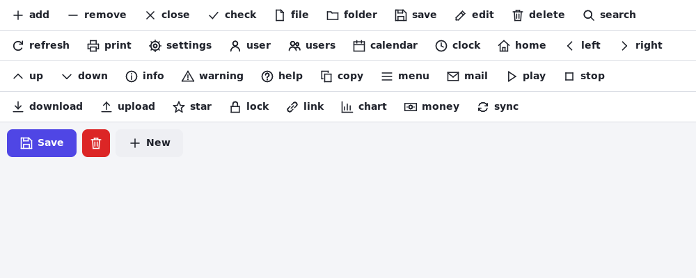

#Controls reference
Every control and component of Pastel, each with an example for the .pform file and for the code. Properties that every control has (Width, Height, Grow, Visible, Enabled, Hint, PopupMenu) are explained once, under Common properties. How forms work in general: forms.md; a whole app step by step: guide-desktop.md; writing controls of your own: components.md.
Layout: TPanel · TColumn · TRow · TCard · TScrollBox · TTabControl · TTabSheet · TSpacer · TFlow · TSplitter · TToolBar · TStatusBar Text: TLabel · TEdit · TMemo Dates, numbers and money: TDatePicker · TCalendarView · TTimeEdit · TNumberEdit · TCurrencyEdit Choices: TButton · TCheckBox · TSwitch · TRadioButton · TComboBox · TListBox · TSlider Tables and trees: TGrid · TGridColumn · TListView · TTreeView Pictures and progress: TImage · TProgressBar · TSpinner Groups, shapes and drawing: TGroupBox · TRadioGroup · TShape · TBevel · TPaintBox Web pages, video and sound: TWebBrowser · TVideoView · TMediaPlayer · TCameraView Maps and push: TMapView · TPushNotifications Codes, sensors, the tray: TBarcode · TSensor · TNfcReader · TBluetoothLE · TTrayIcon Menus: TMenuBar · TMenuItem · TPopupMenu Icons: the built-in icons, your own Without a place on the form: TAction · TTimer · TDataBinding · TOpenDialog · TSaveDialog · TSelectFolderDialog
#Common properties
| Property | Example | |
|---|---|---|
Width, Height |
Fixed size in pixels; 0 (the default) is as big as the content |
Width = 200 |
Left, Top |
The place in a parent with Layout = Free (free placement) |
Left = 24 |
Anchors |
In a free parent: the edges that follow the parent's when it is resized | Anchors = [Left, Top, Right] |
Dock |
In a free parent: Top, Bottom, Left, Right or Fill (Delphi's Align) |
Dock = Bottom |
TabOrder |
The Tab key goes through a parent's controls by TabOrder; equal ones in their .pform order |
TabOrder = 1 |
TabStop |
False: Tab passes it by (a click still focuses it) |
TabStop = False |
Grow |
Takes the free space of its row or column; 2 takes twice as much as 1 |
Grow = 1 |
Visible |
False hides it and gives its space to the others |
Visible = False |
Enabled |
False makes it grey and ignores clicks and keys |
Enabled = False |
Hint |
A tooltip when the mouse rests on it | Hint = 'Saves the file' |
PopupMenu |
A TPopupMenu shown on a right click | PopupMenu = EditMenu |
StyleLookup |
A named look of the app's style file: its colors, corners and sizes (styles) | StyleLookup = 'BigGreen' |
From code, every control has SetFocus, Invalidate (paint again) and Bounds (its place in the window).
#Layout
#TPanel
A box whose children stay where they are put, like Delphi's TPanel (a container with Layout = Free). Give it a Width and Height; Color, BorderColor, BorderWidth, Radius and BackgroundImage make it visible.
object Details: TPanel
Left = 16
Top = 64
Width = 300
Height = 160
Anchors = [Left, Top, Right, Bottom]
BorderWidth = 1
BorderColor = '#D0D4DC'
object CityLabel: TLabel
Left = 12
Top = 12
Text = 'City'
end
object CityEdit: TEdit
Left = 80
Top = 8
Width = 208
Anchors = [Left, Top, Right]
end
end
Details.Visible := ShowDetailsCheck.Checked;
#TColumn
Puts its children below each other. The form itself is a column.
object Fields: TColumn
Gap = 8
Padding = 12
object NameEdit: TEdit
end
object EmailEdit: TEdit
end
end
| Property | |
|---|---|
Layout |
Flow (default): children below each other; Free: where their Left and Top say (free placement) |
Gap |
Space between the children |
Padding |
Space inside the edges |
Align |
Across the column: Stretch (default: as wide as the column), Start, Center, End |
Justify |
Along the column: Start (default), Center, End, SpaceBetween |
Color, BorderColor, BorderWidth, Radius |
Background, border and rounded corners (Color = '#F3F4F8') |
BackgroundImage |
A picture behind the children: a file in assets/ (BackgroundImage = 'paper.png'), next to the program, or a full path. Rows, cards and the form have it too |
BackgroundFit |
Cover (default: fills, cut at the edges), Contain, Stretch, Center |
A form with a picture behind it:
object LoginForm: TLoginForm
BackgroundImage = 'login-background.jpg'
object Box: TCard
...
end
end
#TRow
Puts its children next to each other. Like TColumn, but Align is Center by default; use Align = Stretch to give the children the full height (for two columns side by side).
object Buttons: TRow
Gap = 8
Justify = End // to the right
object CancelButton: TButton
Text = 'Cancel'
Style = Secondary
end
object SaveButton: TButton
Text = 'Save'
end
end
#TCard
A column with a background, a border and rounded corners: a box around things that belong together. Same properties as TColumn.
object LoginCard: TCard
Width = 360
object UserEdit: TEdit
Placeholder = 'User name'
end
end
#TScrollBox
A column that scrolls when its content is taller than it is: mouse wheel, scroll bar, and the focus moving into a hidden control scrolls to it. OnRefresh: pull down to refresh, as on TListView.
object Settings: TScrollBox
Grow = 1
Gap = 8
// many controls...
end
#TTabControl
Pages with tabs; its children are TTabSheets. When the tabs have the focus, Left and Right change the page.
object Pages: TTabControl
Grow = 1
OnChange = PagesChange
object GeneralPage: TTabSheet
Caption = 'General'
end
object AdvancedPage: TTabSheet
Caption = 'Advanced'
end
end
Pages.TabIndex := 1; // show the second page
if Pages.ActiveSheet = AdvancedPage then ...
TabIndex |
The page shown (0 = the first) |
TabPosition |
tpTop (a computer's tabs) or tpBottom: below the pages, the whole width shared out, an icon above each caption — a phone app's bottom navigation |
OnChange |
Another page was chosen |
A phone app's pages, with the tabs at the bottom:
object Pages: TTabControl
Grow = 1
TabPosition = tpBottom
object HomePage: TTabSheet
Caption = 'Home'
TabIcon = 'home'
end
object SearchPage: TTabSheet
Caption = 'Search'
TabIcon = 'search'
end
end
#TTabSheet
One page of a TTabControl: Caption is the text of its tab, TabIcon its icon (one of
Pastel's icons); otherwise a TColumn.
#TDrawer
A panel that slides over the window from its left side (Side = psRight: the right one): a phone app's menu,
behind the ☰ button. It holds controls like a column and takes no room on the form until Open; a tap beside it or
Back (Escape) closes it, the window dimmed behind it.
object MenuButton: TButton
Icon = 'menu'
Style = Flat
OnClick = MenuButtonClick
end
object Menu: TDrawer
object HomeItem: TButton
Text = 'Home'
Style = Flat
OnClick = HomeItemClick
end
object SettingsItem: TButton
Text = 'Settings'
Style = Flat
OnClick = SettingsItemClick
end
end
procedure THomeForm.MenuButtonClick(Sender: TObject);
begin
Menu.Open; // Menu.Toggle, Menu.Close, Menu.IsOpen
end;
procedure THomeForm.SettingsItemClick(Sender: TObject);
begin
Menu.Close;
SettingsForm.ShowModal(@SettingsClosed);
end;
Width is its width (300 when not set, at most 85 % of the window); OnOpen and OnClose say when it opens and
closes.
#TBottomSheet
A TDrawer that comes up from the bottom, as high as its content: choices about something, its details, a short form.
object Actions: TBottomSheet
object CallItem: TButton
Text = 'Call'
Style = Flat
end
end
#TSpacer
Empty space that takes what is free (Grow = 1): pushes the controls after it to the end of a row.
object StatusBar: TStatusBar
object StatusLabel: TLabel
end
object Space: TSpacer
end
object CountLabel: TLabel // at the right edge
end
end
#TFlow
A row that wraps: the controls are placed left to right and go on in the next line when there is no more room — for tags, chips, a set of buttons, small cards that fill a wide window and stack on a narrow one. Gap is the space between them and between the lines; in each line, the ones with Grow share what is left.
object Services: TFlow
Gap = 8
object Cut: TButton
Text = 'Cut'
Style = Secondary
end
object Color: TButton
Text = 'Color'
Style = Secondary
end
object Care: TButton
Text = 'Care'
Style = Secondary
end
end
B := TButton.Create(Self);
B.Text := Name;
B.Parent := Services; // added at the end; the flow places it
Align places the controls of a line at its top (Start), middle (Center, the default) or bottom.
#TSplitter
A bar between two controls of a row (or a column) that the user drags to share the room between them; the mouse pointer becomes ↔ (↕ in a column). It changes the Width (Height) of the control before it, so give that one a Width, and the one after it Grow = 1.
object Body: TRow
Grow = 1
Align = Stretch
object Side: TColumn
Width = 380
...
end
object SideSplitter: TSplitter
MinSize = 240 // neither side gets smaller
OnMoved = SplitterMoved
end
object Details: TColumn
Grow = 1
...
end
end
procedure THomeForm.SplitterMoved(Sender: TObject);
begin
StatusBar.Text := Format('%d pixels', [Side.Width]);
end;
SideSplitter.MoveTo(300); // from code
MinSize (default 80), Target (the control it resizes), MoveTo(Size), OnMoved. In a UI script: drag SideSplitter 40 0. Example: examples/contacts.
#TToolBar
A row of buttons under the menu. Put TButtons with Style = Flat in it (no background until the mouse is on them), and a TSpacer to push the rest to the right. The form usually has Padding = 0, so the bar goes from edge to edge; put the rest of the form in a TColumn with its own Padding.
object Tools: TToolBar
object NewButton: TButton
Text = 'New'
Style = Flat
Hint = 'Ctrl+N'
Action = NewAction // the same command as the menu item
end
object SaveButton: TButton
Text = 'Save'
Style = Flat
OnClick = SaveClick
end
end
A TRow with Padding = 6, Gap = 4, a background and a line under it. Example: examples/notepad.
#TStatusBar
A line at the bottom of the form that says what is going on: its Text, or the labels in it.
object StatusBar: TStatusBar
Text = 'Ready'
end
StatusBar.Text := Format(_('%d contacts'), [Count]);
With more than one part, put labels in it (Text is then not shown):
object StatusBar: TStatusBar
object StatusLabel: TLabel
Text = 'new file'
FontSize = 12
end
object Space: TSpacer
end
object CountLabel: TLabel
FontSize = 12
end
end
A TRow with Padding = 6, Gap = 16, a background and a line over it.
#Text
#TLabel
Text to read. Line breaks in the text (#10 in code) start new lines; WordWrap breaks long lines at the width.
object Title: TLabel
Text = 'Orders'
FontSize = 22
Bold = True
Color = '#4F46E5'
end
Title.Text := Format('%d orders', [Count]);
Text, FontSize (14), Bold, Color |
|
TextAlign |
Left, Center, Right |
WordWrap |
Break long lines |
#TEdit
One line of text to type.
object EmailEdit: TEdit
Placeholder = 'name@example.com'
MaxLength = 120
OnChange = EmailChange
OnSubmit = SaveClick // Enter
end
if Pos('@', EmailEdit.Text) = 0 then
EmailEdit.SetFocus;
EmailEdit.SelectAll;
Text, Placeholder |
The text; the grey text shown when it is empty |
Password |
Shows dots |
ReadOnly, MaxLength |
|
KeyboardType |
The phone's on-screen keyboard: ktText, ktNumber, ktDecimal, ktPhone, ktEmail, ktUrl, ktTime; ktDefault lets the edit choose (TNumberEdit: numbers, TCurrencyEdit: with a decimal point, TTimeEdit: a time) |
ReturnKeyType |
What the on-screen keyboard's Enter key says: rkDone (the default), rkGo, rkNext (to the next control), rkSearch, rkSend; the others call OnSubmit |
OnChange |
The text changed (typing or code) |
OnSubmit |
Enter was pressed |
On a phone (android.md):
object PhoneEdit: TEdit
Placeholder = 'Phone'
KeyboardType = ktPhone
ReturnKeyType = rkNext
end
object AgeEdit: TNumberEdit // numbers by itself
ReturnKeyType = rkDone
end
A right click (on a phone: a finger held on the text, which selects the word there) shows Cut, Copy, Paste and Select all, in the app's language; a PopupMenu of your own replaces them. From code: SelectAll, SelStart, SelLength, SelText, CopyToClipboard, CutToClipboard, PasteFromClipboard, Undo, Redo. Keys: the usual ones of text fields, with Ctrl+Z/Ctrl+Y and words with Ctrl+Left/Right.
#TMemo
Several lines of text; scrolls; WordWrap breaks long lines.
object NotesMemo: TMemo
Grow = 1
WordWrap = True
Placeholder = 'Notes'
end
NotesMemo.Lines.Add('Called on ' + DateToStr(Date));
Count := NotesMemo.Lines.Count;
Same properties as TEdit (without Password and OnSubmit), plus Lines (a TStrings) and WordWrap.
#Code: colors and words offered while typing
A memo can be a small code editor. OnHighlight colors its text; Pastel.Syntax has the highlighters of SQL,
Pascal and JSON (the colors follow the light or dark theme: SyntaxColor):
uses Pastel.Syntax;
SqlMemo.OnHighlight := @Syntax.Sql; // or Syntax.Pascal, Syntax.Json
for K in SqlKeywords do
SqlMemo.Completions.Add(LowerCase(K)); // words offered while typing
SqlMemo.Completions.Add('customers');
Completions (TEdit has it too) shows a list under the caret as a word is typed: Up and Down choose, Enter or
Tab put the word in, Escape closes it, Ctrl+Space shows it at any time. OnCompletions gives the words when
they depend on what is typed: after orders. the columns of orders:
procedure TMainForm.SqlCompletions(Sender: TObject; const Word: string; Items: TStrings);
begin
if SameText(Word, 'orders.') or Word.StartsWith('orders.', True) then
begin
Items.Clear; // only the columns here
Items.AddStrings(['id', 'customer_id', 'total']);
end;
end;
A highlighter of another language: HighlightCode with a TCodeLanguage (its keywords, comments and quotes),
called from a handler of your own: Spans := HighlightCode(MyLanguage, AText). RehighlightText colors the
text again when what the colors depend on changed.
#Dates, numbers and money
These are in the unit Pastel.Inputs. In a .pform you write nothing extra; in code that calls its routines (FormatMoney, TryParseMoney, TryIsoToDate, ParseTimeOfDay) add Pastel.Inputs to uses.
#TDatePicker
A date, chosen from a calendar that opens under it. Keys: Enter, Space or Alt+Down opens it; arrows move by days and weeks, Page Up/Down by months, Enter chooses, Escape closes, Delete empties it. The date is shown the way the language writes dates.
object DueDate: TDatePicker
DateText = '2026-11-01' // '' = no date
Placeholder = 'Due date'
OnChange = DueDateChange
end
DueDate.Date := Date + 14;
if DueDate.HasDate then
Order.Put('due', DueDate.DateText); // '2026-11-15'
DueDate.Clear;
Date |
A TDateTime without time; 0 when there is none |
DateText |
The date as '2026-11-01', '' for none — for .pform files, TDataBinding and UI scripts (set DueDate.DateText 2026-11-03) |
Placeholder |
Shown when there is no date |
NativePicker |
On a phone, the phone's own date picker instead of Pastel's calendar (default True) |
OnChange |
The date changed |
From code: HasDate, Clear, DropDown, CloseUp, DroppedDown. Helpers: TryIsoToDate('2026-11-01', D), DateToIso(D), MonthTitle(2026, 11) (November 2026 in the language).
#TCalendarView
The month grid that TDatePicker opens. Put it on a form when the calendar should always be visible (an agenda, a booking page).
object Month: TCalendarView
OnPick = MonthPick
end
procedure THomeForm.MonthPick(Sender: TObject);
begin
LoadDay(Month.Selected);
end;
Month.ShowDate(Date); // this month, today chosen
Month.NextMonth;
Selected (the chosen day), Year, Month, ShowDate, NextMonth, PreviousMonth, OnPick (a click or Enter on a day). Weeks start on Monday.
#TTimeEdit
A time of day as HH:MM. Up/Down (and the mouse wheel) move it by Step minutes; 930, 9.30 or 9 become 09:30, 09:30, 09:00 when the field is left. On a phone a tap opens the phone's own time picker instead of the keyboard (NativePicker = False: the keyboard); PickTime opens it from code.
object StartTime: TTimeEdit
Text = '09:00'
Step = 30
end
if not StartTime.HasTime then
ShowMessage('When does it start?');
Start := DueDate.Date + StartTime.Time; // a TDateTime with the time
StartTime.Minutes := 14 * 60; // 14:00
Minutes (since midnight, -1 without a time), Time (a TDateTime fraction), HasTime, Step; everything of TEdit.
#TMaskEdit
Text in a fixed shape: a phone number, an IBAN, a postcode, a tax number. EditMask is like Delphi's: 0 a digit,
9 a digit or nothing, L a letter, l a letter or nothing, A a letter or digit, a the same or nothing, C
any character, c any or nothing, > what follows in capitals, < in small letters, \ the next one as it is;
everything else stays as it is. Typing fills the next place and jumps over the fixed characters; Backspace
empties the one before; a mask of digits brings the phone's number keyboard.
object PhoneEdit: TMaskEdit
EditMask = '(000) 000 00 00'
end
object IbanEdit: TMaskEdit
EditMask = '>LL00 0000 0000 0000 0000 0000 00;0'
end
if not PhoneEdit.IsComplete then
ShowMessage('The phone number is not complete');
Customer.Phone := PhoneEdit.Text; // '(532) 123 45 67'
Customer.Iban := IbanEdit.Text; // ';0': without the spaces: 'TR330006100519786457841326'
PhoneEdit.Value := '5321234567'; // the places filled from what was typed
After a ;, 0 leaves the fixed characters out of Text; after a second ; comes the character of the empty
places (_ when not set). Value is what was typed, without them, whatever the mask says.
#TNumberEdit
A whole number, with ▲▼ at its right edge. Only digits can be typed; Up/Down, the wheel and the arrows change it by Step (Page Up/Down by ten steps); leaving the field puts it between Min and Max.
object QuantityEdit: TNumberEdit
Min = 1
Max = 99
Value = 1
OnChange = QuantityChange
end
Total := QuantityEdit.Value * PriceEdit.Value;
QuantityEdit.StepBy(1);
Value, Min, Max, Step, StepBy(Count); everything of TEdit.
#TCurrencyEdit
An amount of money: what people type (1.234,50 or 1,234.50, in the language's way) becomes a Currency; leaving the field writes it nicely. Valid tells whether the text is an amount.
object PriceEdit: TCurrencyEdit
Symbol = '₺'
Decimals = 2
OnChange = PriceChange
end
if not PriceEdit.Valid then
Exit;
Cents := Round(PriceEdit.Value * 100);
PriceEdit.Value := 1250.5; // shows 1,250.50 ₺
TotalLabel.Text := FormatMoney(Total, 2, '₺');
Value, Valid, Symbol, Decimals; everything of TEdit. Helpers: TryParseMoney(Text, V), FormatMoney(V, Decimals, Symbol).
#Choices
#TButton
object SaveButton: TButton
Text = 'Save'
Style = Primary // Primary (default), Secondary, Danger, Flat (for tool bars)
OnClick = SaveClick
end
object BuyButton: TButton
Text = 'Buy'
Color = '#E91E63' // any color; hovering and pressing shade it
TextColor = '#FFFFFF'
end
procedure THomeForm.SaveClick(Sender: TObject);
begin
...
end;
Text, Style |
|
Color, TextColor |
Any background and text color instead of the style's (Color = '#16A34A'); from code BuyButton.Color := $FF16A34A |
Icon |
A built-in icon before the text (Icon = 'save'), or alone when Text is empty — then give it a Hint |
Action |
A TAction: its caption, shortcut and Enabled are used |
Default |
Enter presses it (in a dialog or form) |
Cancel |
Escape presses it |
ModalResult |
In a dialog: a click closes it with this result (mrOk, mrCancel) |
OnClick |
#TCheckBox
object AgreeCheck: TCheckBox
Text = 'I agree to the terms'
OnChange = AgreeChange
end
SendButton.Enabled := AgreeCheck.Checked;
Text, Checked, OnChange. Space toggles it.
#TSwitch
An on/off switch; the same as TCheckBox with another look, for settings that apply at once.
object DarkSwitch: TSwitch
Text = 'Dark mode'
OnChange = DarkChange
end
if DarkSwitch.Checked then Appearance := tmDark else Appearance := tmLight;
#TRadioButton
One choice of several: the radio buttons with the same parent form a group.
object SizeRow: TRow
object SmallRadio: TRadioButton
Text = 'Small'
Checked = True
end
object LargeRadio: TRadioButton
Text = 'Large'
end
end
if LargeRadio.Checked then ...
#TComboBox
A drop-down list to choose one item.
object CityCombo: TComboBox
Items = ('Ankara', 'İstanbul', 'İzmir')
Placeholder = 'Choose a city'
OnChange = CityChange
end
CityCombo.Items.Add('Bursa');
City := CityCombo.Text; // the chosen item, '' for none
CityCombo.ItemIndex := 0; // choose the first
Items, ItemIndex (-1 = none), Text (the chosen item; setting it chooses it), Placeholder |
|
OnChange |
Another item was chosen |
Keys: Alt+Down or Space opens it, arrows choose, typing a letter jumps.
#TListBox
A list of texts; only the visible rows are drawn, so many thousands are fine.
object FileList: TListBox
Grow = 1
OnChange = FileListChange
OnDblClick = FileListOpen // also Enter
end
FileList.Items.Assign(ListFiles(Folder, '*.txt'));
if FileList.ItemIndex >= 0 then
Open(FileList.SelectedText);
Rows moved by the user. With AllowReorder = True each row has a grip (≡) at its right: held there (with the
mouse or a finger) the row follows until let go; Ctrl+Up / Ctrl+Down move the selected one. OnReorder says
from where to where, once Items is in the new order — to save the order:
procedure THomeForm.StepsReorder(Sender: TObject; FromIndex, ToIndex: Integer);
begin
Store.MoveStep(FromIndex, ToIndex);
end;
TListView and TGrid have the same (not while filtered; the sort arrow goes, the order is the user's).
Items, ItemIndex, ItemHeight (0 = from the font), OnChange, OnDblClick; SelectedText and MakeVisible(Index) from code. For rows with several columns use TListView.
#TSlider
A number chosen by dragging.
object VolumeSlider: TSlider
Min = 0
Max = 100
Step = 5
Position = 50
OnChange = VolumeChange
end
VolumeLabel.Text := IntToStr(VolumeSlider.Position) + ' %';
Arrows move by Step, Home and End go to the ends.
#Tables and trees
#TGrid
A table with columns (TGridColumn children). Sorts by a click on a column title; with Editable = True, cells can be edited (F2, Enter, a double click or typing). Only the visible rows are drawn.
object Products: TGrid
Grow = 1
Editable = True
OnCellEdit = ProductsCellEdit
object NameColumn: TGridColumn
Title = 'Product'
Field = 'name'
end
object PriceColumn: TGridColumn
Title = 'Price'
Field = 'price'
Width = 100
Alignment = Right
end
end
Products.LoadJson(Db.Query('select name, price from products', [])); // columns by Field
Products.AddRow(['Tea', '45,00']);
Products.Cells[1, 0] := '50,00'; // column 1, row 0
Products.SortBy(1, True); // by price, largest first
Rows := Products.ToJson; // back to JSON objects
procedure THomeForm.ProductsCellEdit(Sender: TObject; ACol, ARow: Integer;
var Value: string; var Accept: Boolean);
begin
if (ACol = 1) and not TryParseNumber(Value, Price) then
Accept := False; // stays in editing
end;
Row, Col |
The selected row (-1 = none) and column |
Editable, RowSelect, Sortable, Striped, RowHeight |
|
OnChange |
Another row or cell was selected |
OnDblClick |
Double click or Enter on a row (when not editing) |
OnCellEdit |
A cell was edited: change Value, or set Accept := False |
OnSort |
The rows were sorted |
From code: AddRow, InsertRow, DeleteRow, Clear, RowCount, Cells[Col, Row], RowValues[Row], LoadJson, ToJson, SortBy, FindRow(Col, Value), MakeVisible, AddColumn, ToggleCheck(Col, Row).
Numbers, money, dates, check boxes, icons. A column's Kind says what its cells hold. The cell keeps the value as data — '1380.6', '2026-11-03', '1' — and the column shows it the way the language writes it (1.380,60 in Turkish), sorts it as a number or a date, and ToJson gives numbers and true/false:
object TotalColumn: TGridColumn
Title = 'Total'
Field = 'total'
Kind = Money // Text, Number, Money, Date, Check, Icon
end
object PaidColumn: TGridColumn
Title = 'Paid'
Field = 'paid'
Kind = Check // a check box; a click or Space changes it in an Editable grid
end
object StateColumn: TGridColumn
Field = 'state_icon'
Kind = Icon // the cell is an icon's name: 'check', 'warning'...
Width = 40
end
Numbers are typed the language's way (1.380,6) and kept as 1380.6. Decimals sets the digits after the point (money: 2).
Searching. Filter(Text) shows only the rows with the text in a cell (as shown, any case); Filter('') shows all again. Row numbers then count the shown rows; changes made meanwhile stay.
procedure THomeForm.SearchChange(Sender: TObject);
begin
Invoices.Filter(Trim(SearchEdit.Text));
end;
To Excel. ToCsv(';') gives the shown rows as CSV with the titles, which Excel opens; for a real .xlsx, TSpreadsheet.AddJson(Grid.ToJson, ...) (documents.md).
#TGridColumn
One column of a TGrid or TListView.
Title |
The text at the top |
Field |
The name in LoadJson / ToJson (a database column); the Title when empty |
Width |
0 = shares the free space |
Alignment |
Left, Center, Right (numbers) |
Kind |
Text, Number, Money, Date, Check, Icon — how the values are shown and sorted (TGrid) |
Decimals |
Digits after the point for Number and Money |
ReadOnly |
This column is not edited in an editable grid |
#TListView
A TGrid for choosing rows: whole rows are selected and nothing is edited. The usual list of records next to a form.
object Customers: TListView
Grow = 1
OnChange = CustomersChange
object NameColumn: TGridColumn
Title = 'Name'
Field = 'name'
end
object CityColumn: TGridColumn
Title = 'City'
Field = 'city'
Width = 120
end
end
Rows := Db.Query('select * from customers order by name', []);
Customers.LoadJson(Rows);
if Customers.Row >= 0 then
CustomerData.Load(Rows.Objects[Customers.Row]); // TDataBinding
Pull down to refresh. With OnRefresh, a finger that pulls the list down past its top (on a phone; F5 on a
computer) calls it; a circle turns above the list until Refreshing := False:
procedure THomeForm.CustomersRefresh(Sender: TObject);
begin
Sync.Pull; // or a request without waiting
Customers.LoadJson(Db.Query('select * from customers order by name', []));
Customers.Refreshing := False;
end;
#TTreeView
A tree of texts that opens and closes.
object Folders: TTreeView
Items = ('Documents', ' Letters', ' Bills', 'Pictures') // two spaces per level
OnChange = FoldersChange
end
Node := Folders.Add('Music');
Node.AddChild('Jazz').AddChild('Coltrane');
Folders.FullExpand;
Path := Folders.Text; // 'Music/Jazz' (the selected node)
Folders.Selected := Folders.FindNode('Documents/Bills');
OnChange (another node), OnDblClick (a leaf node), OnExpand(Sender, Node) (a node opened: fill its children late). Keys: arrows, Right opens, Left closes.
#TTileView
Many items with pictures: a grid of tiles (posters, products) or a list of rows (channels with their logos).
Thousands stay quick — only what is on the screen is drawn, and the pictures come from the web as they are seen
(Pastel.WebImages: four threads, a cache folder, made smaller on the way).
object Movies: TTileView
Grow = 1
Style = tsGrid // or tsList: a row each, the picture at the left
TileWidth = 160 // tiles grow to fill the row
ImageRatio = 1.5 // the picture's height / width (posters)
EmptyText = 'Nothing here.'
OnItemClick = MoviesItemClick
end
Movies.Clear;
for M in List do
Movies.Add(M.Name, M.Year, M.PosterUrl, M.Id); // title, line under it, picture, Tag
T := Movies.Tiles[Movies.ItemIndex]; // Title, Subtitle, ImageUrl, Badge, Tag, Data
T.Badge := '★ 7.5';
Movies.SetTile(Movies.ItemIndex, T);
The arrows move between the tiles (a TV's remote too); at an edge they go on to the control beside it. Enter
or a click: OnItemClick; OnChange when another is chosen. A finger or the mouse pulls the tiles, the wheel
scrolls.
#Pictures and progress
#TImage
A picture: PNG, JPEG or BMP.
object Logo: TImage
FileName = 'logo.png' // assets/logo.png (compiled into release builds)
Height = 48
Fit = Contain // Contain, Cover, Stretch, Center
end
Photo.FileName := '/home/ali/photo.jpg';
if Photo.LoadError <> '' then ShowMessage(Photo.LoadError);
Photo.LoadFromStream(Stream); // e.g. downloaded
Poster.Url := 'https://example.com/poster.jpg'; // with Pastel.WebImages in uses
Url: a picture from the web, fetched on a thread and kept in a cache folder (Pastel.WebImages; nothing shows
while it comes). WebImage(Url) gives such a picture to code that draws (a TPaintBox).
#TProgressBar
object Progress: TProgressBar
Max = 100
Position = 30
end
Progress.Position := Done * 100 div Total;
Progress.Indeterminate := True; // moving: "working, no idea how long"
#TSpinner
A small turning circle: "please wait".
object Busy: TSpinner
Active = False
end
Busy.Active := True; // while loading
#Groups, shapes and drawing
These are in the Additional group of the designer's palette, like in Delphi.
#TGroupBox
A frame with a title around controls that belong together. Its controls are placed freely, like in Delphi (start them below the title: Top = 32); Layout = Flow stacks them under the title instead.
object Delivery: TGroupBox
Left = 16
Top = 16
Width = 240
Height = 140
Text = 'Delivery'
object AddressEdit: TEdit
Left = 12
Top = 32
Width = 216
end
object ExpressCheck: TCheckBox
Left = 12
Top = 80
Text = 'Express'
end
end
Delivery.Enabled := not PickUpCheck.Checked;
#TRadioGroup
A framed list of choices; one is chosen at a time. Click an item or use the arrow keys.
object PayBy: TRadioGroup
Text = 'Pay by'
Items = ('Cash', 'Card', 'Transfer')
ItemIndex = 0
Columns = 1 // 2: the items fill two columns
OnChange = PayByChange
end
procedure THomeForm.PayByChange(Sender: TObject);
begin
CardPanel.Visible := PayBy.Value = 'Card'; // or PayBy.ItemIndex = 1
end;

#TShape
A rectangle, rounded rectangle, ellipse or circle (the biggest one in its place).
object Status: TShape
Width = 16
Height = 16
Shape = Circle // Rectangle (default), RoundRect, Ellipse, Circle
Color = '#16A34A' // the fill; default: the theme's surface
BorderWidth = 0 // BorderColor, BorderWidth: the outline
end
if Online then Status.Color := $FF16A34A else Status.Color := $FFDC2626;
#TBevel
A thin line across a form (Kind = Horizontal, the default), down (Vertical), or a frame (Frame).
object Divider: TBevel
Left = 16
Top = 172
Width = 488
end
Divider.Visible := DetailsVisible;
#TChart
Bars, lines, pies and donuts, drawn by Pastel (the same everywhere), with a legend, the value under the mouse (or
finger) and a click event. The designer shows it with the data of the .pform:
object Sales: TChart
Kind = ckBar
Title = 'Sales'
Labels = ('Jan', 'Feb', 'Mar')
Data = ('2025=12,15,9', '2026=14,18,16')
OnItemClick = SalesItemClick
end
Sales.Clear;
Sales.SetLabels(['Jan', 'Feb', 'Mar']);
Sales.AddSeries('2026', [14, 18, 16]);
Sales.LoadJson(Db.Query('select month, income, costs from totals', []), 'month', ['income', 'costs']);
procedure THomeForm.SalesItemClick(Sender: TObject; SeriesIndex, ItemIndex: Integer);
begin
ShowMonth(ItemIndex);
end;
Kind |
ckBar, ckLine, ckPie, ckDonut (pies and donuts show the first series, a slice a label; a donut its total in the middle) |
Labels, Data |
The labels; the series as 'Name=1,2,3' lines (the decimal point a dot) |
ShowLegend, ShowValues |
The names of the series; the numbers on the bars, points and slices |
Stacked |
The bars of the series on each other |
ValueFormat |
Format's ('%.1f', '%.0n'); empty writes them short (12.7k) |
#TPaintBox
A place to draw on yourself. OnPaint gets the canvas, clipped to the box; Bounds tells where the box is. Invalidate draws it again; the mouse events give X and Y inside the box. Without OnPaint a thin frame shows where it is.
object Chart: TPaintBox
Width = 300
Height = 160
OnPaint = ChartPaint
OnMouseDown = ChartMouseDown
end
procedure THomeForm.ChartPaint(Sender: TObject; Canvas: TCanvas32);
var
B: TRectI;
I: Integer;
begin
B := Chart.Bounds;
for I := 0 to High(FValues) do
Canvas.FillRect(B.X + I * 20, B.Y + B.H - FValues[I], 16, FValues[I], $FF4F46E5);
end;
procedure THomeForm.ChartMouseDown(Sender: TObject; X, Y: Integer);
begin
ShowMessage(Format('%d, %d', [X, Y]));
end;
The canvas draws with FillRect, FillRoundRect, StrokeRoundRect, FillCircle, DrawLine, DrawText and DrawBitmap (Pastel.Graphics; components.md shows more).
#Menus
#TMenuBar
The window's menu bar; its TMenuItems are the menus. Put it first in the form. F10 or Alt opens it.
object MainMenu: TMenuBar
object FileMenu: TMenuItem
Caption = 'File'
object OpenItem: TMenuItem
Caption = 'Open...'
ShortCut = 'Ctrl+O'
OnClick = OpenClick
end
object Sep1: TMenuItem
Caption = '-'
end
object QuitItem: TMenuItem
Caption = 'Quit'
ShortCut = 'Ctrl+Q'
OnClick = QuitClick
end
end
end
#TMenuItem
Caption |
The text; '-' is a separator line |
ShortCut |
'Ctrl+S', 'Ctrl+Shift+S', 'F5', 'Alt+Enter'; works in the whole window |
Checked |
A check mark (toggle it in OnClick) |
Icon |
An icon before the caption: Icon = 'save' |
Action |
A TAction gives caption, shortcut, icon, Enabled and Checked |
OnClick |
Menu items inside a menu item are a submenu.
#TPopupMenu
A menu that opens on a right click (or the Menu key, or Shift+F10) on the controls that name it in PopupMenu.
object EditMenu: TPopupMenu
object CopyItem: TMenuItem
Caption = 'Copy'
OnClick = CopyClick
end
end
object NotesMemo: TMemo
PopupMenu = EditMenu
end
#Icons
Buttons, menu items, actions and grid icon columns can show an icon: a built-in line drawing, sharp at every size and in the color of the text (so it is right in the dark theme too), or a picture of your own. In the designer, the … button next to Icon opens the icon picker: the built-in icons drawn as they look, the pictures in assets/, and Choose a picture file…, which copies a PNG, JPEG or BMP into assets/icons/ and uses it.

object SaveButton: TButton
Icon = 'save'
Text = 'Save'
end
object DeleteButton: TButton
Icon = 'delete' // an icon alone: a small square button
Style = Danger
Hint = 'Delete the contact'
end

add remove close check file folder save edit delete search refresh print settings user users calendar clock home left right up down info warning help copy menu mail play stop download upload star lock link chart money sync
A picture as an icon: its file name in assets/ (or next to the program). It keeps its own colors and is fitted into the icon's square; release builds carry it inside the program like every asset.
object LogoButton: TButton
Icon = 'icons/logo.png'
Text = 'Shop'
end
Line icons of your own are drawn on a 24 × 24 grid with four commands, the parts separated by ; — l x1 y1 x2 y2 ... (lines through the points), o cx cy r (a circle), f cx cy r (a dot), a cx cy r from to (an arc; degrees, 0 = right, 90 = down). Register them once, for example in the initialization of a unit, and use them like the built-in ones:
uses
Pastel.Icons;
initialization
RegisterIcon('bell', 'l 6 17 6 10; a 12 10 6 180 360; l 18 10 18 17; l 4 17 20 17; f 12 20 1.5');
From code: HasIcon(Name), IconNames, IconDrawing(Name), IsPictureName(Name), LoadAppPicture(FileName, Bitmap), and DrawIcon(Canvas, Name, X, Y, Size, Color) in a control of your own (components.md).
#Parts of forms
#TFrame
A part of forms with a .pform and code of its own — an address block, a customer card — put on many forms, as
often as needed. pastel new frame Address makes src/frames/Address.pform and Address.pas; its type ends in
Frame:
// src/frames/Address.pform
object AddressFrame: TAddressFrame
Gap = 8
object StreetEdit: TEdit
OnChange = StreetEditChange
end
object CityEdit: TEdit
end
end
A form puts it where it wants it:
object Billing: TAddressFrame
end
object Shipping: TAddressFrame
end
Shipping.StreetEdit.Text := Billing.StreetEdit.Text; // each one has its own controls
procedure TAddressFrame.StreetEditChange(Sender: TObject); // its events go to its own methods
begin
CityEdit.Enabled := StreetEdit.Text <> '';
end;
A frame is a TColumn: Gap, Padding, Grow set on the form's line apply to it. In test scripts,
its controls are Billing.StreetEdit. Hot reload works for frames too: a saved frame .pform updates every form
that has it, keeping what was typed. In the designer the project's frames are in the palette under This project
(Pastel: New Frame… makes one); on a form a frame is one block — its controls are designed in its own .pform.
#Web pages, video and sound
#TVideoPlayer
Video and live streams in the form, on computers and phones alike (Pastel.VideoPlayer): HLS, MPEG-TS, MP4,
MKV... with audio tracks and subtitles.
object Player: TVideoPlayer
Grow = 1
OnStateChange = PlayerStateChange
OnTap = PlayerTap
OnKeyDown = PlayerKey
end
Player.UserAgent := 'MyApp/1.0'; // some servers want one
Player.Play('http://example.com/live/42.m3u8');
Player.Seek(30, True); // 30 seconds on (not live streams)
Player.ShowInfo('Channel 1', 'Now: News 20:00-21:00'); // a band at the bottom, with the progress
for T in Player.Tracks do // Kind 'audio' or 'sub', Id, Language, Title, Selected
if T.Kind = 'audio' then ...
Player.SelectTrack('sub', -1); // no subtitles
Play, Pause, TogglePause, Stop, Seek; State (psIdle, psLoading, psPlaying, psPaused,
psEnded, psError with Error), Position and Duration in seconds (Duration 0: live), Volume,
Muted, VideoWidth/VideoHeight; OnStateChange, OnTracksChange, OnError, OnTap, OnDoubleTap
(full screen), OnKeyDown (it sees the keys first: a TV's arrows change channels). Its own keys: Enter/Space
pause and play, Left/Right 10 seconds, M mutes.
| Linux, Windows, macOS | libmpv draws the picture into the window (sudo apt install libmpv2; Windows: libmpv-2.dll next to the program); VideoPlayerAvailable, VideoPlayerProblem say whether it is there |
| Android | ExoPlayer when the app has it ([package.android] libraries = ["androidx.media3:media3-exoplayer:1.4.1", "androidx.media3:media3-exoplayer-hls:1.4.1"]), else Android's MediaPlayer; the picture is the phone's own view over the window, the info band and the spinner drawn by it |
Pastel.NativeViews: on Android the phone's own WebView, VideoView, MediaPlayer and camera. A web page, a video
and the camera's picture are over the app's window at the place of their control and follow it — scrolled,
hidden, another form; a dialog over the form, or a menu over them, hides them while it is open. On computers TWebBrowser shows the address and opens the
page in the browser on a click, TVideoView opens the video in the video app, TMediaPlayer plays with mpv,
ffplay or VLC (Linux), afplay (macOS) or Windows Media Player.
#TWebBrowser
A web page in the form. Its JavaScript sends text to Pascal with pastel.post(text) (OnMessage); Pascal runs
JavaScript in it with EvaluateJavaScript (the value comes back as JSON). Links to other apps (tel:, mailto:,
market:) open those apps; Back goes to the page before while the page has the keyboard.
object Browser: TWebBrowser
Grow = 1
Url = 'https://pastel.dev'
OnLoad = BrowserLoad
OnMessage = BrowserMessage
end
procedure THomeForm.BrowserLoad(Sender: TObject; const Url: string);
begin
TitleLabel.Caption := Browser.Title;
BackButton.Enabled := Browser.CanGoBack;
end;
procedure THomeForm.ShowReceipt;
begin
Browser.LoadHtml('<h2>Receipt</h2><button onclick="pastel.post(''paid'')">Paid</button>');
end;
procedure THomeForm.BrowserMessage(Sender: TObject; const Text: string);
begin
if Text = 'paid' then
Orders.MarkPaid(OrderId);
end;
procedure THomeForm.TotalClick(Sender: TObject);
begin
Browser.EvaluateJavaScript('document.querySelectorAll("li").length', @ItemsCounted);
end;
Navigate, LoadHtml(Html, BaseUrl), GoBack, GoForward, Reload, Stop, CanGoBack, CanGoForward, Title,
EvaluateJavaScript; OnLoading, OnLoad, OnError, OnMessage.
#TVideoView
A video in the form: a file (an absolute path) or an address (https://, a stream).
object Video: TVideoView
Height = 220
Url = 'https://example.com/welcome.mp4'
OnCompleted = VideoCompleted
end
Video.Play;
Video.Pause;
Video.Position := 30000; // 30 s in
if Video.Playing then
TimeLabel.Caption := Format('%d / %d s', [Video.Position div 1000, Video.Duration div 1000]);
Play, Pause, Stop, Playing, Position and Duration (milliseconds), Volume (0 to 1), Loop;
OnPrepared (the length is known), OnCompleted, OnError.
#TMediaPlayer
Sound without a place on the form: music, a recording, a stream; the same as TVideoView without the
picture. With [package.android] background = ["media_playback"] and StartBackgroundWork(..., bkMediaPlayback)
(device.md) it plays on when the app is not on the screen.
object Player: TMediaPlayer
Url = 'https://radio.example.com/live.mp3'
Volume = 0.8
end
Player.Url := JoinPath([HomeDir, 'songs', 'intro.mp3']); // on a phone HomeDir is the app's own folder
Player.Play;
#TCameraView
The camera's picture in the form (Android's Camera2): a photo without leaving the app, the start of a scanner.
Start asks for the camera's permission ([package.android] permissions = ["camera"]) and shows it; TakePhoto
writes a JPEG, the right way up, and OnPhoto says where. On computers it is a dark box (TakePhoto of
Pastel.Device opens the camera app on phones and a file dialog on computers).
object Camera: TCameraView
Height = 360
OnPhoto = CameraPhoto
end
procedure THomeForm.FormShow(Sender: TObject);
begin
Camera.Start; // Camera.Front := True: the selfie camera; Camera.Torch := True: the light
end;
procedure THomeForm.ShootClick(Sender: TObject);
begin
Camera.TakePhoto; // or TakePhoto(JoinPath([HomeDir, 'receipt.jpg']))
end;
procedure THomeForm.CameraPhoto(Sender: TObject; const FileName: string);
begin
Preview.Picture := FileName;
Camera.Stop;
end;
Start, Stop, Active, TakePhoto, Front, Torch; OnStarted, OnPhoto, OnError.
#Maps and push
#TMapView
A map, drawn by Pastel from map tiles — the same on phones and computers: a finger or the mouse moves it, a
double tap, the wheel and its + − buttons zoom. Markers (a tap shows the title and gives OnMarkerClick),
routes, a tap on the map itself (OnMapClick with the place). Tiles come from OpenStreetMap by default — its
rules ask for the attribution (shown) and no heavy use: an app with many users sets TileUrl to a tile service
of its own or a paid one ('https://tiles.example.com/{z}/{x}/{y}.png'; {s} for a, b, c). Tiles are kept in
memory and in a cache folder, fetched on a thread of their own.
object Map: TMapView
Grow = 1
Latitude = 41.0082
Longitude = 28.9784
Zoom = 13
OnMarkerClick = MapMarkerClick
end
uses
Pastel.Maps;
Map.AddMarker(41.0086, 28.9802, 'Salon Kadıköy').Data := SalonId;
Map.AddMarker(41.0430, 29.0070, 'Salon Beşiktaş', $FF43A047);
Map.AddRoute([GeoPoint(41.0086, 28.9802), GeoPoint(41.0250, 28.9900), GeoPoint(41.0430, 29.0070)]);
Map.FitAll; // every marker and route in sight
procedure THomeForm.MapMarkerClick(Sender: TObject; Marker: TMapMarker);
begin
ShowSalon(Marker.Data);
end;
SetCenter(Lat, Lon, Zoom), ZoomIn, ZoomOut, FitAll, AddMarker, RemoveMarker, ClearMarkers,
Markers[], Selected, AddRoute, ClearRoutes, PlaceAt(X, Y), PointOf(Lat, Lon); Latitude, Longitude,
Zoom, MinZoom, MaxZoom, TileUrl, Attribution, ShowZoomButtons; OnMarkerClick, OnMapClick, OnMove.
With the place of the phone (GetLocation, device.md): Map.SetCenter(Place.Latitude, Place.Longitude, 16).
#TPushNotifications
Push messages (Firebase Cloud Messaging): your server sends to a phone's token or to a topic, the phone shows it. device.md has the setup.
object Push: TPushNotifications
OnToken = PushToken
OnMessage = PushMessage
end
procedure THomeForm.PushToken(Sender: TObject; const Token: string);
begin
Api.Post('/devices', Token); // where your server sends to
end;
procedure THomeForm.PushMessage(Sender: TObject; Msg: TPushMessage);
begin
if Msg.Opened then // the user tapped its notification
ShowOrder(Msg.Data.Values['order'])
else
ShowToast(Msg.Title); // it came while the app was on the screen
end;
RequestToken, Subscribe(Topic), Unsubscribe(Topic), Token; OnToken, OnMessage, OnError.
#Codes, sensors and the tray
#TBarcode
A QR code or a barcode drawn by Pastel (Kind: bkQR, bkCode128, bkEAN13), sharp at any size. For reports
and labels BarcodeBitmap and SaveBarcodePng give it as a picture; QrEncode the modules.
object OrderCode: TBarcode
Kind = bkQR
Text = 'https://shop.example.com/order/1042'
Width = 160
Height = 160
end
ProductCode.Kind := bkEAN13;
ProductCode.Text := '869000000000'; // the check digit is added
if ProductCode.Error <> '' then ShowMessage(ProductCode.Error);
SaveBarcodePng('label.png', 'ORD-1042', bkCode128, 3);
Text, Kind, Level (QR: qlLow, qlMedium, qlQuartile, qlHigh), Color, BackColor, ShowText;
Error. Reading codes with the camera: ScanBarcode (device.md).
#TSensor
The phone's motion and other sensors (Pastel.Sensors), ten readings a second (Interval).
object Motion: TSensor
Kind = skAccelerometer
OnReading = MotionReading
end
procedure THomeForm.MotionReading(Sender: TObject; const R: TSensorReading);
begin
if Abs(R.X) > 15 then Shaken; // m/s²
end;
Kind: skAccelerometer, skGyroscope, skMagnetometer, skLight, skProximity, skStepCounter,
skRotation (Heading: the compass), skPressure; Active, Available, Reading. Computers have none.
#TNfcReader
NFC tags held to the phone while the app is on the screen: their id and their text ([package.android] permissions = ["nfc"]).
object Tags: TNfcReader
OnTag = TagRead
end
procedure THomeForm.TagRead(Sender: TObject; const Id, Text: string);
begin
CheckIn(Id); // a staff card, a product, a table
end;
#TBluetoothLE
Bluetooth Low Energy devices — scales, heart-rate belts, thermometers, beacons ([package.android] permissions = ["bluetooth"]; RequestPermissions([dpBluetooth]) before scanning).
Ble.Scan(10); // OnDeviceFound for each, OnScanDone
Ble.Connect('AA:BB:CC:DD:EE:FF'); // OnConnected, OnServices
Ble.Subscribe(Address, '0000180d-0000-1000-8000-00805f9b34fb', '00002a37-0000-1000-8000-00805f9b34fb');
Ble.Write(Address, Service, Characteristic, #1#2);
procedure THomeForm.BleValue(Sender: TObject; const Address, Characteristic: string; const Value: RawByteString);
begin
HeartRate.Text := IntToStr(Ord(Value[2]));
end;
Scan, StopScan, Connect, Disconnect, Read, Write, Subscribe; OnDeviceFound, OnScanDone,
OnConnected, OnDisconnected, OnServices, OnValue, OnError. Android only for now.
#TTrayIcon
A desktop app in the system tray, with a menu. Keys that work while another app is in front:
RegisterHotKey('Ctrl+Shift+S', @QuickSearch).
object Tray: TTrayIcon
Hint = 'Salon'
Menu = ('Open', 'Sync now', '-', 'Quit')
OnMenuItem = TrayMenuItem
end
procedure THomeForm.TrayMenuItem(Sender: TObject; Index: Integer; const Caption: string);
begin
case Caption of
'Sync now': Sync;
'Quit': Application.Terminate;
end;
end;
Windows: the notification area (OnClick on a click). Linux: KDE, Xfce, Cinnamon, MATE, Budgie (GNOME with the
AppIndicator extension) through libayatana-appindicator3-1; hot keys on X11 (Wayland does not allow them).
#Files dropped on the window
On computers, files dragged from the file manager can be dropped on the window: OnDropFiles of the control
under them (a panel or column, an image, a list, a grid, a memo — or the first one above it that has the event),
else the form's.
object DropZone: TPanel
OnDropFiles = DropZoneDropFiles
object DropLabel: TLabel
Text = 'Drop pictures here'
end
end
procedure THomeForm.DropZoneDropFiles(Sender: TObject; const Files: TStringArray);
var
F: string;
begin
for F in Files do
Pictures.Items.Add(F);
end;
In test scripts: drop DropZone /path/a.png /path/b.png.
#Without a place on the form
These components are not drawn: they appear at the top of the .pform file. In the designer's toolbox they are marked with ◇.
#TAction
One command for a menu item, a button and a shortcut together: they share the caption and the icon, and Enabled := False disables all of them.
object DeleteAction: TAction
Caption = 'Delete'
Icon = 'delete'
ShortCut = 'Ctrl+D'
OnExecute = DeleteExecute
end
object DeleteItem: TMenuItem // inside a menu
Action = DeleteAction
end
object DeleteButton: TButton
Action = DeleteAction
Style = Danger
end
DeleteAction.Enabled := Customers.Row >= 0;
#TTimer
Runs OnTimer again and again, every Interval milliseconds, on the window's thread (it may change controls).
object Clock: TTimer
Interval = 1000
OnTimer = ClockTimer
end
procedure THomeForm.ClockTimer(Sender: TObject);
begin
TimeLabel.Text := FormatDateTime('hh:nn:ss', Now);
end;
Clock.Enabled := False; // stop it
#TOpenDialog
The open-file dialog as a component, like Delphi's: put it on the form (it is not drawn), set its properties in the designer and call Execute. The same as OpenFileDialog in Pastel.Dialogs.
object OpenNotes: TOpenDialog
Filter = 'Notes|*.txt;*.md|All files|*'
Title = 'Open a note'
end
if OpenNotes.Execute then
Memo.Lines.LoadFromFile(OpenNotes.FileName);
#TSaveDialog
Like TOpenDialog, and asks before replacing a file; DefaultExt is added when the name has none.
object SaveNotes: TSaveDialog
Filter = 'Notes|*.txt'
DefaultExt = '.txt'
end
SaveNotes.FileName := FCurrentFile;
if SaveNotes.Execute then
Memo.Lines.SaveToFile(SaveNotes.FileName);
#TSelectFolderDialog
Chooses a folder.
object PickFolder: TSelectFolderDialog
Title = 'Where should the backups go?'
end
if PickFolder.Execute then
BackupEdit.Text := PickFolder.Folder;
#TShareReceiver
The app in other apps' share menu (Android): OnShareReceived gets what was shared — a text, a link, photos, files
(copied into the app's cache) — also when the share opened the app. pastel.toml lists the kinds it takes; see
device.md.
object Shares: TShareReceiver
OnShareReceived = SharesShareReceived
end
procedure THomeForm.SharesShareReceived(Sender: TObject; const Shared: TSharedContent);
begin
NoteMemo.Text := Shared.Subject + LineEnding + Shared.Text;
if Length(Shared.Files) > 0 then
Picture.FileName := Shared.Files[0];
end;
#TLinkReceiver
Links that open the app (shop://..., its site's addresses) and the shortcuts of its icon (Android): OnLink
gets the address, also the one that started the app; OnShortcut the shortcut's Id. pastel.toml lists the
links; see device.md.
object Links: TLinkReceiver
OnLink = LinksLink
OnShortcut = LinksShortcut
end
procedure THomeForm.LinksLink(Sender: TObject; const Url: string);
begin
ShowToast('Opened with ' + Url);
end;
procedure THomeForm.LinksShortcut(Sender: TObject; const Id: string);
begin
if Id = 'new' then NewButtonClick(nil);
end;
#TNotificationCenter
Notifications, with an event for taps; see device.md (Pastel.Notifications).
object Notifications: TNotificationCenter
OnNotificationClick = NotificationsNotificationClick
end
Notifications.Schedule('appt-42', 'Appointment', 'Ayşe at 10:00', IncHour(Start, -1));
procedure THomeForm.NotificationsNotificationClick(Sender: TObject; const AName: string);
begin
if AName = 'appt-42' then OpenAppointment(42); // the app was opened by a tap on it
end;
#TDataBinding
Fills controls from a record (a JSON object, an object's properties or a grid row) and reads them back; see guide-desktop.md.
object CustomerData: TDataBinding
Fields = ('NameEdit', 'EmailEdit', 'ActiveSwitch', 'CitySelect=city_name')
end
CustomerData.Load(Db.QueryOne('select * from customers where id = ?', [Id]));
Data := CustomerData.ToJson; // {"name": ..., "email": ..., "active": ..., "city_name": ...}
if CustomerData.Modified then ...
CustomerData.Clear; // a new record
NameEdit binds the field name (the control's name without its kind, in snake_case); 'CitySelect=city_name' names the field.
Checking the values. Rules say what a value must be; Validate checks them all before saving:
object CustomerData: TDataBinding
Fields = ('NameEdit', 'EmailEdit', 'AgeEdit', 'PostcodeEdit')
Rules = ('NameEdit=required, min 2', 'EmailEdit=email', 'AgeEdit=integer, range 0..120',
'PostcodeEdit=pattern ^\d{5}$')
ErrorLabel = ProblemLabel
end
procedure THomeForm.SaveClick(Sender: TObject);
begin
if not CustomerData.Validate then
Exit; // the wrong fields are red, the first one has the focus
Customers.Save(CustomerData.ToJson);
end;
| Rule | |
|---|---|
required |
Not empty (the other rules only check values that are there) |
email, number, integer |
An e-mail address; a number the language's way (1.380,5); a whole number |
range 0..120 |
A number between |
min 3, max 50 |
At least, at most so many characters |
pattern ^[A-Z]{2}\d+$ |
A regular expression; it comes last, as it may hold commas |
A wrong edit gets a red border and the problem as its tooltip (Edit.Error); typing clears it. ErrorLabel shows the first problem, Problems lists them all (NameEdit=Fill this in). The messages are in the app's language. For checks of your own, OnValidate:
procedure THomeForm.CustomerDataValidate(Sender: TObject; Control: TControl; const Value: string;
var Message: string);
begin
if (Control = EmailEdit) and Customers.EmailTaken(Value) then
Message := _('There is a customer with this e-mail already');
end;